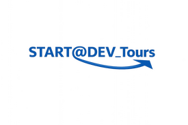
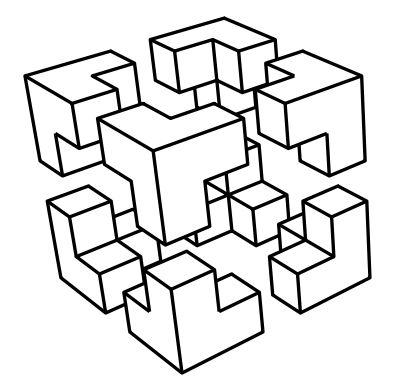
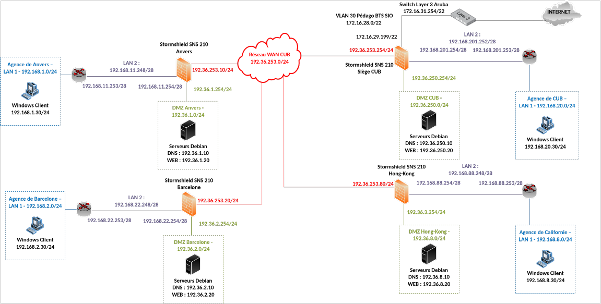

Bienvenue sur mon Portfolio
Je m'appelle Joris Texier
Etudiant en BTS SIO option SISR
Compétences acquises
Réseaux & Infrastructures
- VLAN, routage inter-VLAN, NAT/PAT, ACL
- Spanning Tree (STP), OSPF, HSRP, vPC
- VPN, proxy / reverse proxy
- Cluster, haute disponibilité
Systèmes & Virtualisation
- Active Directory, GPO, DFS
- PKI, DHCP, DNS, bastion d’administration
- Hyper-V, VMware, Proxmox
- Gestion RAID, NAS
Services, Sécurité & Outils
- Tests d’intrusion (Kali Linux)
- Pare-feu : Stormshield, Palo Alto
- Supervision : Zabbix, GLPI
- Docker, PowerShell, Bash, Ansible
- Cloud : AWS, Microsoft Azure
- Gestion de versions : Git
Qu'est ce que le BTS SIO ?
Le Brevet de Technicien Supérieur aux Services Informatiques aux Organisations s'adresse à ceux qui souhaitent se former en deux ans aux métiers d'administrateur réseau ou de développeur. Il permet ensuite d'intégrer directement le marché du travail ou de poursuivre ses études dans le domaine de l'informatique.
Option SISR
L'option SISR forme des techniciens supérieurs capables de gérer et d'administrer des parcs informatiques ainsi que des réseaux pour une entreprise. L'objectif est de garantir la sécurité, la disponibilité et la performance des services informatiques.
Les diplômés de l'option SISR peuvent prétendre à des postes tels que :
- Administrateur systèmes et réseaux
- Technicien de maintenance
- Technicien réseau ou support
- Pilote d'exploitation
- Informaticien support et déploiement
Option SLAM
L'option SLAM est dédiée à la conception et au développement d'applications logicielles. Elle forme des professionnels capables de créer, d'adapter et de maintenir des programmes informatiques répondant aux besoins spécifiques d'une entreprise.
Les diplômés de l'option SLAM peuvent accéder à des postes variés, tels que :
- Développeur d'applications / Développeur informatique
- Développeur web
- Analyste-programmeur
- Technicien d'études informatiques
- Chargé d'études informatiques
Parcours
Expérience Professionnelles
Études supérieures
BTS SIO Option SISR
Lycée Paul Louis Courier, 37000 - Tours
Lycée
Bac Pro Système Numérique option RISC
(Système Numérique - Réseaux Informatiques et Systèmes Communicants)
Lycée Thérèse Planiol, 37600 - Loches
Admis mention assez bien
Formations Scolaire
Stage de troisième année de BTS SIO
STMicroelectronics
Migration de l’infrastructure réseau du datacenter.
Remplacement des Cisco Catalyst C9400-supp1 par des Cisco Nexus 93108TC-FX3P.
Remplacement des Catalyst 9120I par des Catalyst 9164I.
Mise en place de firewall pour le réseau datacenter sur le site de Rennes.
Stage de deuxième année de BTS SIO
DGFIP
Installation et configuration de Docker avec Zabbix, Joplin Server et Portainer.
Mise en place d’un système de sauvegarde et de monitoring avancé pour les conteneurs Docker.
Stage de première année de BTS SIO
Audilab
Gestion administrative d'une base de données sur Clarilog. Mise à jour des données des utilisateurs.
Rapport mensuel sur l'usage d’Internet avec Cisco Meraki. Simulation de phishing avec Mailinblack.
Gestion des groupes et utilisateurs d’un Active Directory.
Mes Stages
Durant les trois années de BTS SIO il est demandé d’effectuer un stage par an. Le premier se déroule sur 5 semaines de stage. Pour la deuxième année et la troisième année de BTS SIO, il est demandé de faire 7 semaines de stage.
Stage de troisième année - STMicroelectronics
Période de stage : 05/01/2026 - 20/02/2026
En troisième année de BTS SIO option SISR, j'ai eu l'opportunité d'effectuer un stage au service infrastructure à STMicroelectronics.
Missions
- STMicroelectronics - Mission 1 - Migration de l’infrastructure réseau du datacenter : remplacement des commutateurs Cisco Catalyst C9400-supp1 par des Cisco Nexus 93108TC-FX3P.
- STMicroelectronics - Mission 2 - Migration de l’infrastructure réseau : remplacement des Catalyst 9120I access point par des Catalyst 9164I.
- STMicroelectronics - Mission 3 - Mise en place de firewall pour le réseau datacenter sur le site de Rennes.
Compétences E5
- Gérer le patrimoine informatique
- Travailler en mode projet
- Mettre à disposition des utilisateurs un service informatique
Stage de deuxième année - DGFIP
Période de stage : 06/01/2025 - 14/02/2025
En deuxième année de BTS SIO option SISR, j'ai eu l'opportunité d'effectuer un stage au service infrastructure de la DGFIP (Direction générale des Finances Publiques).
Missions
- Installation et configuration de Docker avec Zabbix et Joplin Server + Portainer.
- Mise en place d’un système de sauvegarde et de monitoring avancé pour les conteneurs Docker.
Compétences E5
- Gérer le patrimoine informatique
- Mettre à disposition des utilisateurs un service informatique
Stage de première année - Audilab
Période de stage : 21/05/2024 - 26/06/2024
En première année de BTS SIO option SISR, j'ai eu l'opportunité d'effectuer un stage au service infrastructure à Audilab.
Missions
- Gestion administrative d'une base de données sur Clarilog, mise à jour de données des utilisateurs.
- Mise en place de rapport mensuel concernant l'usage d'Internet à l'aide de la solution Cisco Meraki. Simulation de phishing avec l’outil Mailinblack pour évaluer la vulnérabilité des employés et sensibiliser aux cybermenaces.
- La gestion des groupes et utilisateur d’un Active Directory.
Compétences E5
- Gérer le patrimoine informatique
- Mettre à disposition des utilisateurs un service informatique
- Répondre aux incidents et aux demandes d'assistance
- Organiser son développement professionnel
Certifications
ANSSI Cybersécurité
Le MOOC de l’ANSSI est un cours gratuit en ligne sur la cybersécurité. Il couvre la sécurisation des réseaux, la cryptographie, et la législation. Un certificat est délivré à la fin.
Ce MOOC m’a permis d’approfondir mes connaissances sur la sécurité des réseaux, la cryptographie et la législation, me permettant de mieux protéger les infrastructures et de sensibiliser les utilisateurs aux menaces.
Certification
Cisco : Introduction réseau (CCNAv7)
Le CCNAv7 (Cisco Certified Network Associate version 7) est une certification Cisco qui valide les compétences de base en réseau, compris les protocoles IP, la sécurité, et l’automatisation.
Cette certification m’a permis d’acquérir des bases solides en réseau, notamment sur les protocoles IP, la sécurité et l’automatisation, ce qui est essentiel pour gérer efficacement le patrimoine informatique et répondre aux incidents réseau.
Certification
Notions de bases sur les réseau
La certification "Notions de base sur les réseaux" par NetAcad est le premier module du cursus CCNA. Elle introduit les concepts fondamentaux des réseaux informatiques, préparant les étudiants aux rôles d'Administrateur Réseau ou Ingénieur Réseau.
Le cursus complet inclut plusieurs modules sur la commutation, le routage, et les réseaux sans fil, avec un examen final pour obtenir la certification.
Certification
Ethical hacker
La certification "Ethical Hacker" de NetAcad est conçue pour former des professionnels capables de tester et de sécuriser les systèmes informatiques en adoptant une approche offensive.
Ce cours gratuit en ligne de 70 heures prépare les apprenants aux rôles de testeur de pénétration et d’analyste en cybersécurité. Il inclut des laboratoires pratiques et des scénarios réels pour comprendre les tactiques des cybercriminels et renforcer les défenses des réseaux. Les participants peuvent obtenir un certificat et un badge numérique en réussissant l’examen final et un défi "Capture the Flag".
CertificationCompétence E5 :
- Organiser son développement professionnel

Gestion de Projet
La gestion de projet, ou le management de projet, consiste à organiser le déroulement d’un projet de A à Z, de sa phase de conception à sa phase finale. Pour ce faire, il faut définir les objectifs, les ressources humaines et matérielles nécessaires, le budget, les délais et les contraintes éventuelles.
Les méthodes de gestion de projet :
Notion :
Durant la troisième année nous avons utilisé Notion, avec la méthode Agile. Notion est un outil de gestion de projet en ligne qui peut être utilisé avec diverses méthodes de gestion de projet, comme Scrum et d'autres approches agiles.
Il offre une plateforme visuelle où les utilisateurs peuvent organiser leurs tâches sous forme de cartes, les déplacer entre différentes colonnes représentant différents états du flux de travail, et collaborer avec leur équipe en temps réel.
Interface Notion :

AP
Bienvenue dans mon espace de réalisations. Vous trouverez ici une sélection d'activités et de projets menés durant mes trois années de BTS SIO. Ces travaux illustrent ma maîtrise technique et ma capacité à déployer des solutions numériques performantes et adaptées.
Présentation du contexte Start@Dev
InfoDev ICT est une entreprise de services numériques spécialisée dans le développement d’applications et la mise en place de réseaux informatiques.
Dans une démarche de modernisation, l’entreprise souhaitait actualiser l’apparence de son site web afin de le rendre plus attractif et conforme aux standards actuels.
Dans le cadre des ateliers de professionnalisation de ma première année de BTS SIO, nous avons travaillé sur ce besoin en utilisant WordPress, choisi pour sa simplicité d’administration et sa capacité à répondre efficacement aux attentes de l’entreprise. Cette mission nous a permis de comprendre les enjeux d’une refonte web et d’apprendre à manipuler un CMS pour proposer une interface plus moderne et adaptée aux utilisateurs.

Missions réalisées - premier semestre de première année
Start@Dev - Mission 1
Comparatif CMS
Documentation mission 1 : Comparatif Documentation mission 1 : Présentation de la solution retenueCompétences E5
- Gérer le patrimoine informatique
- Développer la présence en ligne de l’organisation
- Travailler en mode projet
- Mettre à disposition des utilisateurs un service informatique
Présentation du Contexte Barec Automatismes
L'entreprise Barec Automatismes, SA au capital de 5 000 000 € produit et vend des automates industriels. Basée en France, la société possède 2 sites et plusieurs agences.
Elle produit chaque jour plus de 8 000 automates programmables et comporte 62 personnes dédiées à cette production.
Suite a un audit informatique, il s'avère que le système informatique de l'entreprise est vieillissant et manque de réactivité. Il a donc été décidé de le mettre à jour.

Missions réalisées - deuxième semestre de première année
BAREC - AP1
Infrastructure réseau
Mission 1 - Définir un nouveau plan d'adressage
Mission 2 - Maquettage de l'infrastructure réseau et mise en place
Mission 3 - Maquettage de l'accès wifi et mise en place
Documentation AP1 - Mission 1 Documentation AP1 - Mission 2 Documentation AP1 - Mission 3BAREC - AP2
Postes clients
Mission 1 - Installation de postes clients
Mission 2 - Recherche et mise en place d’un outil de déploiement des postes
Mission 3 - Recherche et mise en place d’un outil de gestion d’incident
Documentation AP2 - Mission 1 Documentation AP2 - Mission 2 Documentation AP2 - Mission 3BAREC - AP3
Services réseau
Mission 1 - Mise en place du service d’authentification et d’annuaire AD sous Windows Serveur BA01
Mission 2 - Mise en place du service DHCP sous Linux (serveur BA02) / modification des paramétrages réseaux des routeurs en conséquence
Documentation AP3 - Mission 1 Documentation AP3 - Mission 2BAREC - AP4
Serveur Web et sauvegarde
Mission 1 - Mise en place du serveur Web BA04 sous Linux
Mission 2 - Gestion de la sauvegarde des contenus Web hébergé sur le serveur BA04
Documentation AP4 - Mission 1 Documentation AP4 - Mission 2Compétences E5
- Gérer le patrimoine informatique
- Répondre aux incidents et aux demandes d’assistance et d’évolution
- Travailler en mode projet
- Mettre à disposition des utilisateurs un service informatique
Présentation du Contexte Saint Chély d'Apcher
Saint Chély d’Apcher, commune lozérienne de 5094 habitants, est une ville située dans l’ancienne province du Gévaudan, entre les Monts de la Margeride à l’Est et les Monts de l’Aubrac à l’Ouest.
Son altitude est de 1000 m, région marquée par le granit, vallonnée et couverte de bois et de landes. Elle se situe au carrefour entre les départements du Cantal, de la Haute-Loire et de l’Aveyron.
Le développement de la commune est également lié à l’implantation d’une entreprise métallurgique appartenant aujourd’hui au groupe ArcelorMittal.

Missions réalisées - deuxième année
SCA - SP0 Introduction
Infrastructure initiale
Mission 1 - Adapter le plan d’adressage aux nouveaux besoins
Mission 2 - Mise en place d’un serveur de gestion d’incidents (GLPI)
Mission 3 - Mise en place d’un serveur NAS
Documentation SP0 - Mission 1 Documentation SP0 - Mission 2 Documentation SP0 - Mission 3SCA - SP1 Remédiation
Modernisation de l’infrastructure
Mission 1 - Adapter l’infrastructure actuelle de la mairie pour répondre à cette évolution
Mission 2 - Mise en place d’un environnement virtuel pour héberger l’application
Mission 3 - Mise en place dans un environnement virtuel pour héberger l’application « gestion-eau »
Mission 4 - Tests finaux avec les développeurs depuis le réseau WAN
Documentation SP1 - Mission 1 Documentation SP1 - Mission 2 Documentation SP1 - Mission 3 Documentation SP1 - Mission 4SCA - SP2 Remédiation
Continuité de service
Mission 1 - Adaptation du schéma logique DNS et continuité de service
Mission 2 - Réaliser le prototype permettant la mise en place de la solution proposée pour les DNS tutorés
Mission 3 - Réaliser le prototype permettant la mise en place de la solution proposée pour les DNS récursifs
Mission 4 - Tests finaux pour le recettage
Documentation SP2 - Mission 1 Documentation SP2 - Mission 2 Documentation SP2 - Mission 3 Documentation SP2 - Mission 4SCA - SP10 Exploration
Supervision et conteneurisation
Mission 1 - Modification de la maquette de l’AP avec Docker Zabbix
Mission 2 - Installation et configuration de Docker
Mission 3 - Déploiement de Zabbix avec Docker
Mission 4 - Configuration de la supervision avec Zabbix
Documentation SP10 - Mission 1 Documentation SP10 - Mission 2 Documentation SP10 - Mission 3 Documentation SP10 - Mission 4Compétences E5
- Gérer le patrimoine informatique
- Répondre aux incidents et aux demandes d’assistance et d’évolution
- Travailler en mode projet
- Mettre à disposition des utilisateurs un service informatique
Contexte CUB
Durant toute ma deuxième année, j’ai évolué au sein de l’environnement CUB, une mise en situation professionnelle conçue pour simuler les réalités du monde de l’informatique.
Ce contexte m’a permis de donner du sens à mes apprentissages en les appliquant à des problématiques concrètes d’infrastructure et de sécurité. Cette expérience a été déterminante dans ma capacité à diagnostiquer des pannes, sécuriser des accès et administrer des systèmes performants.
Afin de regrouper toutes les activités réalisées, nous avons élaboré une documentation en ligne, disponible en libre consultation sur notre GitHub.
Documentation CUB agence Frankfurt - Esteban Touzet & Joris TexierCompétence :
- Développer la présence en ligne de l’organisation

Dans le cadre du projet d’infrastructure CUB, mon binôme et moi avons été chargés du déploiement de l’agence Frankfurt. Le schéma réseau ci-dessous détaille l’architecture entière regroupant tous les groupes de la classe.

Voici un plan de notre réseau Frankfurt au lancement réalisé sur Cisco Packet Tracer.

Puis le plan réseau final :

Veille
Cette page est vide pour le moment.